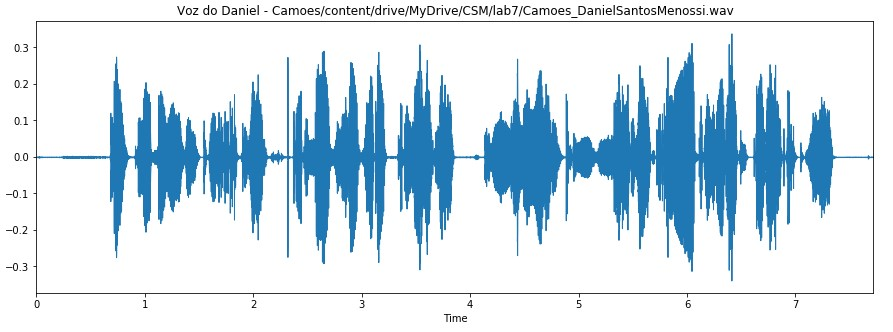

Poema
O áudio analisado aqui é o trecho do poema de Camões, utilizado na p2a.
A primeira estrofe refere-se à: Campos bem aventurados.
Onda sonora para áudio e para a primeira estrofe, energia para a primeira estrofe, segmentos sonoros (voiced) e surdos (unvoiced) para a primeira estrofe.
- Limiar VAD 47.3231976345853
- Limiar U/UV 50.0231976345853
- Sonoros = 4 e Surdos = 5
